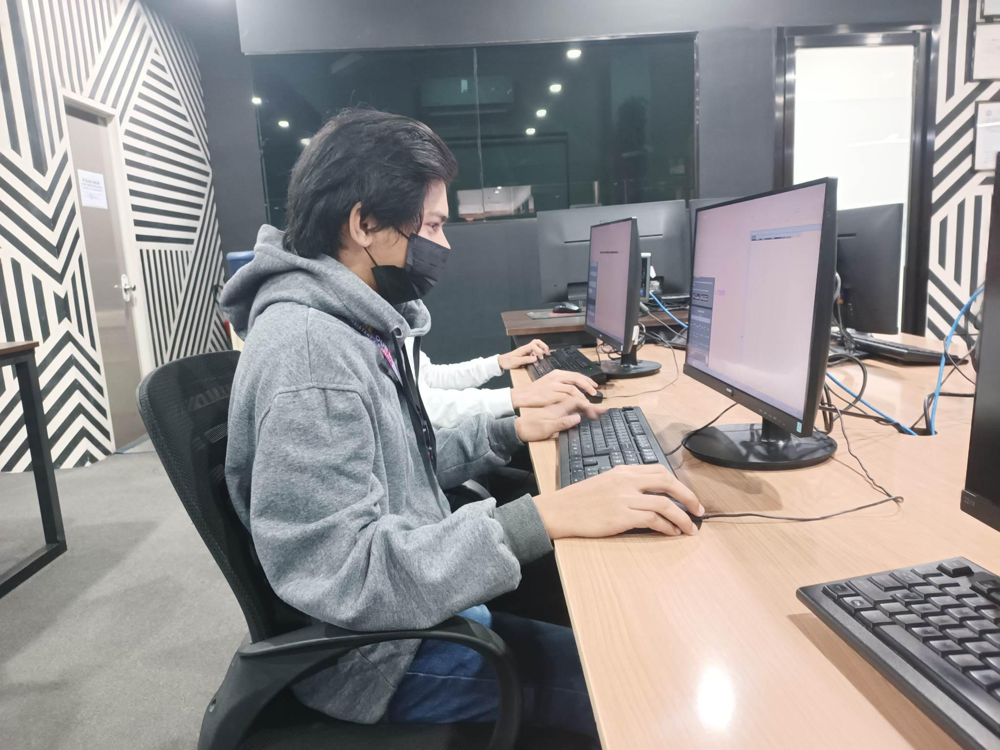
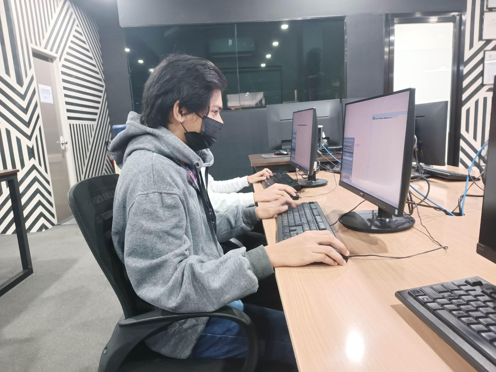

My Work Experience
What do you do daily in the OJT establishment? How does it help in improving your skills in your course?
I’m a lead Profilers/Miners in SPLACE and in this role we taking responsible for analyzing customer data, and inputting proper data for the customer like their name, address, zip code, and phone number which are creating customer profiles exact and reliable to use that will help the businesses make informed decisions about their customers. One of the most valuable skills gained from working in this role is the ability to analyze data required to create accurate customer profiles, as well as train to be responsible for managing and prioritizing tasks, which will be useful in any future career.
Describe scenarios/situations and problems encountered during your work and how you handle them?
As a lead Profilers/Miners in SPLACE the most problems that we I encountered during my work is sometimes I have some mistakes inputting a data in excel so in proper to handle on this situations is I need to take time to double-check to ensure that the data I input is accurate because accuracy is crucial when creating customer profiles even small errors can lead to significant consequences.
Discuss your overall observation and professional relations with co-OJTs, employees and supervisors in the company. What have you learned from them?
For me My all observation in the company and their employees is they are friendly environment. To my co-OJT I’ve very thankful of them that they help me sometime when I have problem in the work. Overall, I have learned the significance of collaboration, continuous learning, and maintaining a positive work culture and these experiences have contributed to my personal development to prepared me for my future career.
Certificates or other documents of OJT establishment recognition.
Copies of Performance Review.
Pictures of you on the job.
 

To demonstrate basic skills, your portfolio may include an item with description on each. Included in this skill set are:
lead Profilers/Miners. As as an intern we taking responsible inputting correct data for the customer like their name, address, zip code, and phone number which are creating customer profiles exact and reliable to use.
A list of computer programs that you use
What is the most important thing in the IT Profession that you have learned during your Industry Exposure?
As an intern in SPLACE one of the most important things that I learn during my exposure in the industry is being meticulous and focused in the work that we need to take time to double-check what are we do in other to ensure that it was right.
What values have you learned in your OJT experience? What are the implications of these values in your life and as a future IT professional?
As an intern in SPLACE one of the values that I’ve learned is know how to collaborate well with others to achieve goals with each other and meet the deadlines. This values it cultivates teamwork and leadership abilities that very essential for my future career.
Will you become a good and competent IT professional someday? Why?
Yes, because I’ve some knowledge that I learned during my studies and internship like I have knowledge about basic programming, computer networks and Microsoft office that this skills well help me to keep up with others and be competitive.
How can you bring impact and good influence to the next batch of OJTs?
As an Intern I bring impact and good influence to the next batch of OJT by providing guidance or support to help them navigate challenges and promoting them to be a good intern that have a value in their self.
Pictures of you on the job (professional attire)